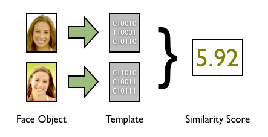
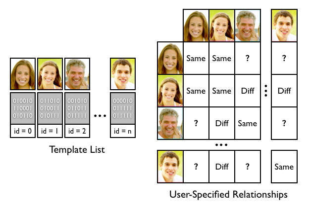
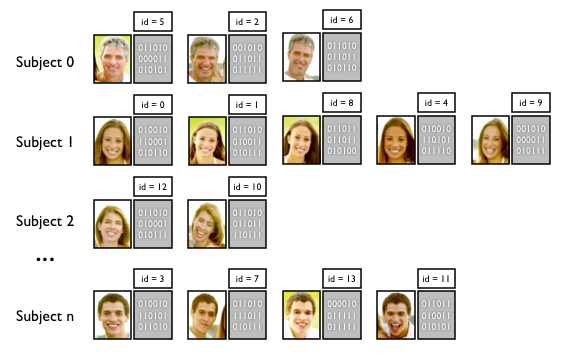

Table of Contents
Face recognition automatically determines if two face images are likely to be the same subject. By convention, a query subject is a person of interest that is compared to one or more target subjects to find the best match, if any. The FTR-SDK enables large-scale query to target comparisons by extracting templates from faces and organizing those templates into galleries that can be compared to each other.
Back to top.
If recognition will be used, it must be enabled by calling
ppr_enable_recognition
before initializing the context. Recognition should not be enabled if it will not be used because it increases
memory usage and initialization time. After recognition is enabled, its
context parameters can be configured by calling the functions listed in
Initialize and Configure Functions. Finally,
the context can be initialized by calling
ppr_initialize_context.
Back to top.
A template is a representation of a face that can be compared to other templates to determine the similarity between faces. After extracting a template from a face, it can be added to a gallery where large-scale template-to-template comparisons can be performed. Each template-to-template comparison produces a similarity score.
A frontal face object with landmarks is required in order to create a template. Faces with frontal landmarks typically produce better recognition results than faces with multi-pose landmarks.

Figure 1. Templates are generated from faces and then compared to produce similarity scores.
Back to top.
A gallery is a collection of templates. A gallery not only provides a convenient way of storing templates, but also provides a number of advantages over storing an array of individual templates in a separate data structure.
Each template is assigned an ID as it is added to a gallery. Template IDs are unique within a given gallery but not across galleries. If a template is added to more than one gallery, a copy of the template is stored in each gallery, and the template is likely to have a different ID in each gallery. Template IDs are assigned incrementally, starting at 0, and are not reused within a gallery (i.e., if a template is removed from a gallery its ID will never be assigned to another template that is added later).
A gallery also maintains user-specified relationships between templates.

Figure 2. A gallery consists of a template list and user-specified relationships between templates.
Back to top.
A gallery maintains user-specified relationships between templates. A relationship indicates if a pair of templates are known to be from the same subject or known to be from different subjects.
The relationships are taken into account when creating a self-similarity matrix. Templates that are specified as belonging to the same subject will have high similarity scores. Likewise, templates that are specified as belonging to different subjects will have very low similarity scores.
The user-specified relationships are also taken into account when clustering. Templates that are specified as belonging to the same subject will always be in the same subject in the subject list that results from clustering. Likewise, templates that are specified as belonging to different subjects will always be in different subjects in the resulting subject list.
Back to top.
A similarity score is produced when two templates are compared. Higher scores indicate better matches. The score is normalized such that a score of 0.0 corresponds to a 1% false acceptance rate on an internal data set, and a score of 1.0 corresponds to a 0.1% false acceptance rate on the same data set.
Back to top.
Two galleries can be compared to produce a similarity matrix. By convention, the subjects in question are placed in a query gallery and are matched against the subjects in a target gallery. The number of rows in the resulting similarity matrix is equal to the number of templates in the query gallery. The number of columns in the similarity matrix is equal to the number of templates in the target gallery. Each value in the matrix gives a score that indicates how well the corresponding target template and query template match.
All templates in a single gallery can be compared to all other templates in the same gallery to produce a self-similarity matrix. A self-similarity matrix takes user-specified relationships into account when it is created.
Back to top.
A self-similarity matrix is a comparison between all templates in a gallery and themselves. The template relationships specified by the user are taken into account when generating the self-similarity matrix such that template pairs marked as PPR_RELATIONSHIP_SAME_SUBJECT have high scores and template pairs marked as PPR_RELATIONSHIP_DIFFERENT_SUBJECTS have large negative scores. Transitivity is applied to the user-specified template relationships such that if A and B are marked as the same, and B and C are marked as the same, the similarity score between A and C will also be set to a high value. Values along the diagonal of the self-similarity matrix also have high scores because they represent comparing a template to itself.
Back to top.
A subject represents a single person. A single subject may be represented by one or more templates. Therefore, the ppr_template_id_list_type data structure is typically used for a subject, storing a list of the IDs of the templates that make up the subject.
Back to top.
A subject list groups templates that are likely to be (or known to be) from the same person. A subject list can be generated automatically from a gallery by clustering the templates in the gallery based on similarity. The clustering accounts for any template relationship information the user has provided.

Figure 3. A subject list contains a set of template lists. Each template list represents a single subject.
Back to top.
Templates can only be extracted from frontal faces that contain the necessary
landmarks, namely the two eyes and the nose base. The
frontal yaw constraint is used to determine whether or not a face is
frontal. Call
ppr_is_object_suitable_for_recognition
to determine if a template meets the requirements for extraction.
There are two different types of templates that can be extracted - single templates and double templates. Single
templates are faster and use less memory at the expense of some accuracy when performing template comparisons.
Double templates are the most accurate, but when compared to single templates, they use twice as much memory and
comparisons take twice as long. If a single template is compared to a double template, the comparison will work, but
the double template will be treated as a single template. Therefore the speed and accuracy will be equivalent to
comparing two single templates. Set the template extraction type using
ppr_set_template_extraction_type.
Back to top.
The frontal yaw constraint indicates what range of yaw angles is acceptable to consider a face to be frontal. Since
templates can only be extracted for
frontal faces, using the restrictive frontal yaw constraint reduces the number
of cases where templates can be extracted. However, using the permissive setting can decrease overall recognition
accuracy. The decrease in accuracy is due to the fact that as the difference in yaw angle between two faces
increases, the ability of the recognizer to successfully match the two faces decreases. Set the frontal yaw
constraint using
ppr_set_frontal_yaw_constraint.
Back to top.
By default each template contains a thumbnail image of the object it was generated
from. A thumbnail can be retrieved from a template by calling
ppr_get_template_thumbnail or
ppr_get_template_thumbnail_by_id. A
thumbnail is cropped, rotated, and scaled such that the face is upright and the thumbnail dimensions are 48 x 64.
Thumbnails are provided strictly as a way of visualizing the face represented by the template. Operations such as
recognition should be performed only on the original images, not on the thumbnail images. The cropping, rotation,
scaling, and compression applied to the thumbnails makes them unsuitable for recognition and other SDK operations.
Template thumbnails can be disabled by calling
ppr_disable_template_thumbnails. When
template thumbnails are disabled, a thumbnail is not added to the template when
ppr_extract_template_from_object is called.
When reading templates, any existing thumbnail is removed after the template is read from disk. Disabling template
thumbnails does not affect any templates that are already in memory. When writing a template to disk, the thumbnail
will be written if the template has one, regardless of whether template thumbnails are disabled. An error is
returned when trying to retrieve a thumbnail from a template that does not have one.
Back to top.
In the presence of multiple processing cores (within or across CPUs), substantial speed improvements can be achieved by allowing the SDK to spawn multiple worker threads. When configured appropriately, the SDK distributes much of the processing load among each worker with a relatively small overhead.
The number of worker threads that are spawned can be set independently for detection and recognition. This allows threading schemes where the user handles threading across multiple images for detection, but the SDK handles the threading for recognition. See Multi-Threaded Detection for a discussion of various detection threading schemes.
Call ppr_set_num_recognition_threads to set
the number of threads that the SDK will use internally for recognition. The num_threads
argument should be set to the number of available CPU cores. Alternatively, fewer threads can be requested to
reserve processing resources for other activities. To avoid unnecessary speed penalties, the
num_threads parameter should not be greater than the number of available cores. Setting the
number of recognition threads does not change the number of detection threads. Set the number of detection threads
independently using
ppr_set_num_detection_threads.
The ppr_extract_template_from_object
function is not internally threaded. The user may benefit from launching several threads and extracting templates in
parallel.
Back to top.
A ranked list provides scores indicating how well a specified query template matches all templates in a target gallery. When generating a ranked list, a maximum list length as well as a score threshold can be specified. Any templates that do not meet the score threshold are not included in the ranked list. The ranked list is guaranteed not to exceed the maximum length specified, but it may be smaller than the maximum length if not enough templates in the target gallery meet the score threshold.
Some functions produce ranked lists based on entire subjects rather than just templates. For those functions, the scores are produced by averaging the scores between each template in the query subject and each template in the target.
Back to top.
It is possible to create a paradoxical set of template relationships. Consider the case where the following relationships are assigned:
The user must avoid creating paradoxes such as the above example. Such paradoxical relationships cause errors to be
returned from the clustering and
transitive matching portions of the SDK. To avoid paradoxes, create a
subject list and use
ppr_set_template_relationships_from_subject_list
to set the template relationships when possible.
Back to top.
Transitive matching improves the accuracy of gallery-to-gallery comparisons when there are multiple templates for the same subject in one or both galleries. This feature is extremely helpful when identifying subjects in videos or when using a photo collection with known subjects to identify subjects in another photo collection.
Without transitive matching, a gallery-to-gallery comparison simply compares all templates in the target gallery to all templates in the query gallery to produce a similarity matrix. Transitive matching takes gallery-to-gallery comparisons one step further by identifying transitive relationships in and across galleries and using them to boost similarity scores. Consider this illustrative example.
Because Sam has aged through the course of these photos, templates A and B are very similar - as are templates B and C. But, due to the passage of time, the similarity score between A and C is low. Transitive matching leverages the transitive relationship
to boost the similarity score between A and C.
A call to ppr_apply_transitive_matching
updates the similarity matrix by leveraging as many transitive relationships as possible via an internal clustering
process.
Back to top.
Each template and gallery can hold a string set by the user. The strings are not used internally by the SDK. They are simply provided as a way for the user to associate their own string with the data structures. For example a template string could be used to store the name of the image the template was generated from, or the name of the subject represented by the template. The maximum string lengths, including the null-terminators are defined by PPR_MAX_TEMPLATE_STRING_SIZE and PPR_MAX_GALLERY_STRING_SIZE. Only the number of characters actually used in the string are stored in the data structures.
Back to top.
Frameworks for using the recognition portion of the FTR-SDK are described below. The frameworks provide an introduction to the order in which functions should be called, with links to each function's detailed description.
Call ppr_get_context to get a new context with the
default parameters. The returned context should be stored for submission to future function calls.
Recognition must be enabled in the context before initialization since recognition functions will be used. Call
ppr_enable_recognition to allow recognition
functions to be used in the context.
Certain parameters cannot be configured after the context is initialized. Therefore, unless the default values are desired, the parameters must be configured before the initialization step. The function references indicate which parameters must be set before initialization.
After configuring the context,
ppr_initialize_context must be called before the
context can be used.
A gallery can be created using the
ppr_create_gallery function. The newly created
gallery is empty (i.e., it contains no templates).
Follow the steps in the Detection Framework or
Tracking Framework to acquire faces with landmarks. Templates can be
created by passing detected faces with the required landmarks to the
ppr_extract_template_from_object
function. Alternatively, previously saved templates can be read from disk by calling
ppr_read_template.
A template can be added to a gallery using the
ppr_copy_template_to_gallery
function. The template is assigned an ID and copied to a list inside the gallery.
If two templates are known to be the same subject or different subjects, this can be specified using
ppr_set_template_relationship.
A gallery can be compared to other galleries or it can be
clustered to produce subject groupings. The gallery
can be saved to disk by calling ppr_write_gallery.
Any templates that were created or read from disk must be freed using
ppr_free_template when they are no longer needed.
Galleries must be freed using ppr_free_gallery.
Call ppr_release_context to inform the SDK that the
previously allocated context is no longer required. Each context must be released to avoid memory leaks.
Call ppr_finalize_sdk to inform the SDK that it is no
longer needed. This function releases the SDK's internally managed memory buffers. It must be called before
exiting the program.
Back to top.
Call ppr_get_context to get a new context with the
default parameters. The returned context should be stored for submission to future function calls.
Recognition must be enabled in the context before initialization since recognition functions will be used. Call
ppr_enable_recognition to allow recognition
functions to be used in the context.
Certain parameters cannot be configured after the context is initialized. Therefore, unless the default values are desired, the parameters must be configured before the initialization step. The function references indicate which parameters must be set before initialization.
After configuring the context,
ppr_initialize_context must be called before the
context can be used.
Follow the steps in the Creating Galleries section to create
galleries. Alternatively, previously saved galleries can be read from disk by calling
ppr_read_gallery.
Compare two galleries using the
ppr_compare_galleries function. This produces a
similarity matrix from which meaningful information can be extracted. If the two galleries have previously been
compared, but have now changed, pass the previous similarity matrix to
ppr_recompare_galleries. Calling
ppr_recompare_galleries is faster than repeating
a call to
ppr_compare_galleries because it is able to re-use
previously computed data.
The
ppr_get_ranked_template_list_for_template,
ppr_get_ranked_template_list_for_subject,
ppr_get_ranked_subject_list_for_subject,
ppr_get_best_matching_templates, and
ppr_get_best_matching_subjects functions
all take a similarity matrix as input and return useful information.
Any galleries that were created or read from disk must be freed using
ppr_free_gallery when they are no longer needed.
Similarity matrices must be freed using
ppr_free_similarity_matrix.
Lists returned from comparison functions must be freed using
ppr_free_template_id_list,
ppr_free_index_list, and
ppr_free_score_list, as appropriate.
Call ppr_release_context to inform the SDK that the
previously allocated context is no longer required. Each context must be released to avoid memory leaks.
Call ppr_finalize_sdk to inform the SDK that it is no
longer needed. This function releases the SDK's internally managed memory buffers. It must be called before
exiting the program.
Back to top.
The following applications are included to demonstrate usage of the recognition portion of the FTR-SDK and to provide an easy way to evaluate the SDK. A build script is provided to build all example applications. The applications can be passed a -help flag to get usage information.
recognition-create_galleryThis application reads a list of images, detects all of the faces in all of the images, and creates a template for each face that meets the criteria for recognition. All templates are added to a gallery. The gallery is then written to disk.
recognition-create_subject_galleryThis application takes input in the form of a directory which contains one or more subdirectories that each represent a single subject. Each subdirectory must have one or more single-frontal-face images of the corresponding subject.
A gallery and a subject list are created from the input. The gallery and subject list are then written to disk as a known-subject gallery. The known-subject gallery can be read from disk and compared to other galleries to identify people.
recognition-compare_gallery_templatesThis application reads a target gallery and a query gallery from disk and does a gallery-to-gallery comparison. The result of comparing the two galleries is a similarity matrix that shows how well each template in the target gallery matches each template in the query gallery.
A directory is created for each template in the query gallery. The directory contains a thumbnail for the query template. It also contains a subdirectory of thumbnails from the target templates that best match the query template.
recognition-compare_gallery_subjectsThis application compares a query gallery to a known subject gallery and determines which subjects in the known subject gallery best match each subject in the query gallery.
A directory is created for each subject in the query gallery. The directory contains a thumbnail for each template in the query subject. It also contains a subdirectory of target subjects that best match the query subject. Each target subject is its own directory, consisting of thumbnails for each template in that target subject.
recognition-rank_matching_facesThis application reads a list of images of single faces and compares all of the images to each other. For each image it ranks all of the other images according to how well they match the image in question.
If more than one face is found in an image, the SDK determines which face is the most suitable for face recognition.
recognition-match_query_to_referenceThis is an example of using recognition to match faces between images. All frontal faces in the query image(s) are compared to all frontal faces in the reference image to determine their similarity. Scores are reported for each pair of faces.
Output images are written with boxes showing the location of the faces that were found in each image. If a face in a query image matches a face in the reference image, then their boxes will be the same color. Faces in the query image(s) that do not match any of the faces in the reference image or do not meet the criteria for recognition are boxed with a dotted line. Faces in the reference image that do not meet the criteria for recognition are also boxed with a dotted line.
recognition-across_tracksThis application uses the tracker to process a video sequence. It then selects faces from each track such that they are spaced out over the entire track. It produces templates from those faces and chooses a select few templates to represent each track. Finally, all resulting templates are clustered to determine which tracks belong to the same subject.
If a known-subject gallery is provided, the final gallery is matched against it to assign names to subjects. Use recognition-create_subject_gallery to create a known-subject gallery.
An output video is created with boxes around the tracked faces. Track ID information is displayed below each box along with the subject's name if it was matched to a subject in the known-subject gallery.
Back to top.
© 2004-2010 Pittsburgh Pattern Recognition, Inc.